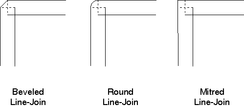

The line join attribute specifies the shape formed by two intersecting geometric lines. Where one wide line joins another, the nature of the join must be defined. An application can select a beveled, rounded, or mitred line-join style.
Note: The join attribute takes effect only when a path is converted to a geometric wide line using GpiStrokePath or GpiModifyPath.
Set the current geometric line-join attribute with GpiSetLineJoin. The attribute applies to all subsequent intersection of lines within the path bracket. The following table describes the three standard line joins provided by the PM programming interface. You cannot define your own join types.
Standard Geometric Line Join Types
┌────────────────────────────────┬────────────────┬────────────┐ │Type │Identifier │Long Value │ ├────────────────────────────────┼────────────────┼────────────┤ │Diagonal corner │LINEJOIN_BEVEL │1L │ ├────────────────────────────────┼────────────────┼────────────┤ │Rounded corner │LINEJOIN_ROUND │2L │ ├────────────────────────────────┼────────────────┼────────────┤ │90° angled corner │LINEJOIN_MITRE │3L │ └────────────────────────────────┴────────────────┴────────────┘
The default join type (LINEJOIN_DEFAULT) is identical to the LINEJOIN_BEVEL type, and has a long value of 0L. The error linetype (LINEJOIN_ERROR) has a long value of -1L. The following figure illustrates these three types of line joins.
Your application can determine the current geometric line join using GpiQueryLineJoin. 
Joining Wide Lines